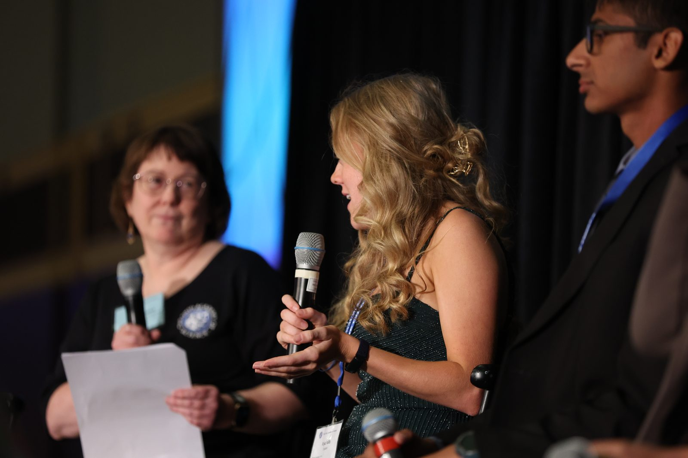

Chemical Engineering student at Ohio State · Humanitarian Engineering Scholars Program · Pre-Law Minor in Science & Engineering in the Public Interest
I'm the only woman in almost every room I've walked into. That's not a complaint. It's the reason I build what I build.
This past summer I was at NASA's Marshall Space Flight Center, in the Electromagnetic Environments Testing Branch, working on electromagnetic environmental effects and building a test fixture we called the Iron Hand Mark 3. Most of my time outside that goes to EvE Waste, the startup I co-founded in 2024 and serve as CTO. We build modular anaerobic reactors that sit on-site at food manufacturers, digest their organic waste before it can be hauled to a landfill, and turn the digestate into a nutrient additive we sell on. There's a pilot running at Clocktower and testing underway on Ohio State's campus. Alongside that I serve as Vice President of the United Nations Association of Ohio, and I attended Climate Week NYC this year.
Two papers came out this year: one with IEEE modeling dark oxygen flux across the Clarion-Clipperton Zone, the stretch of Pacific seabed the deep-sea mining industry wants most, and one with Springer on physics-informed deep learning for tidal energy siting. My independent work on compost-powered microbial fuel cells was published in Sustentabilis Terra in 2025 and earned the EPA Award at ISEF.
I grew up in Lima, Ohio, watching science fairs from the sidelines: curious but under-resourced, with no roadmap for how someone like me got to stand at a project board at a national competition. When I found my way in, through a teacher who believed in me and a community that showed up, it changed everything. That's why I founded the FairGame Initiative, which has now reached more than 1,000 students, most of them entering their first science fair, supported by a statewide teacher network and a free library of 288 resources for teachers running fairs on no budget.
The direction I'm building toward sits at the overlap of engineering and environmental law, not because I couldn't choose between them, but because the most important problems won't be solved by either field alone. The science tells us what's possible. The policy determines what actually happens. I want to be someone who can move in both rooms.
Technical and interdisciplinary capabilities built across research, engineering, software, and policy.
Founded November 2025. Nonprofit closing the resource gap in STEM education, now reaching 1,000+ students through a statewide teacher network and a free 288-resource library.
Co-founded a startup in 2024 building modular anaerobic reactors that digest food manufacturing waste on-site and sell the digestate as a nutrient additive. Leads reactor design, the digestion process, and technical direction.
Serves as Vice President of the statewide UNA chapter, supporting chapter programming, membership, and advocacy on global policy across Ohio.
Attended Climate Week NYC, the largest annual climate event in North America, alongside delegates from government, industry, and civil society.
Nonprofit Internship Program placement supporting EDGE, the organization carrying out the city-backed Eastland for Everyone plan in southeast Columbus.
Competes on Ohio State's collegiate MUN team through the Council on World Affairs, working at the intersection of technical knowledge and international policy.
Selected for OSU's sustainability committee to advance student-driven policy recommendations and integrate sustainable practices into university operations.
Community building for gender equity in engineering; collaboration on sustainable engineering projects and devices alongside ESW's interdisciplinary team.